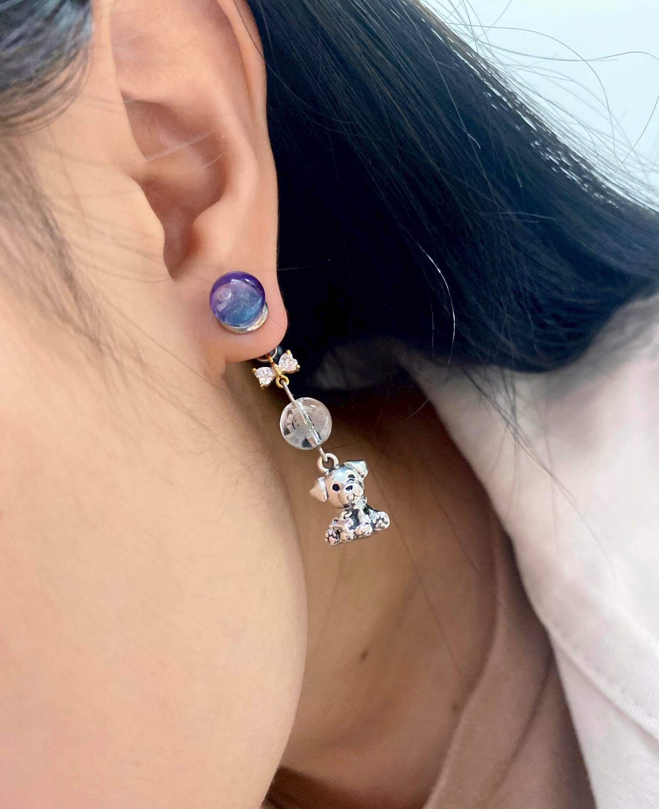
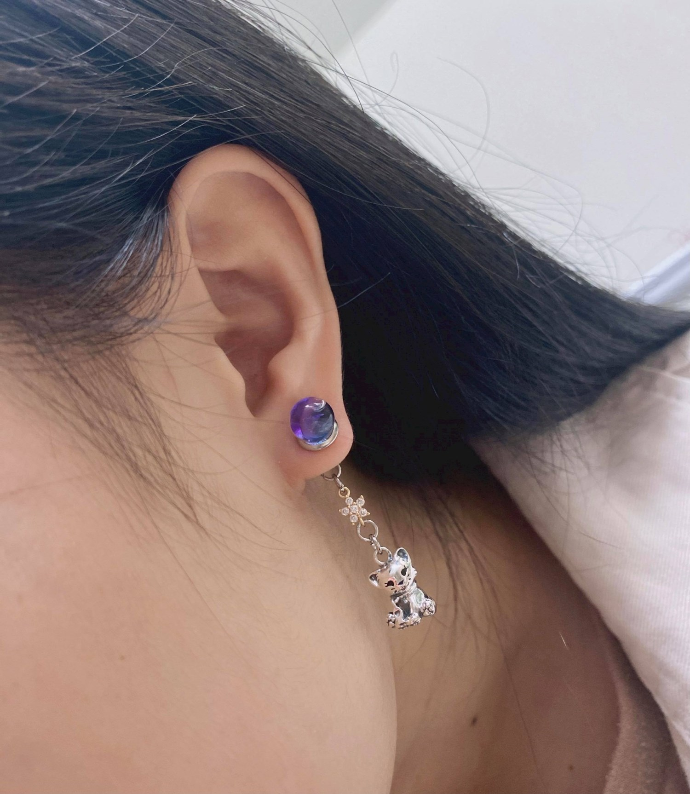
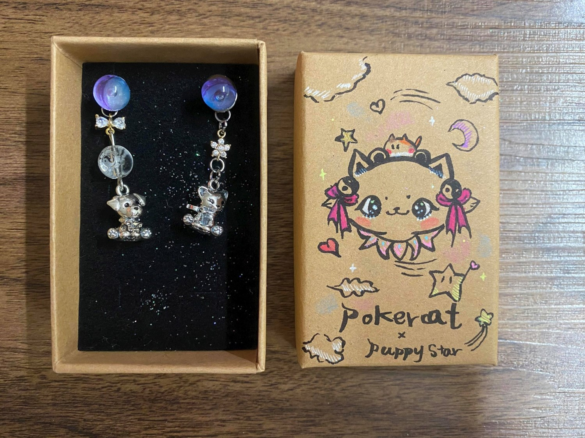

木然貓日常
《守護星願狗狗耳飾》
因為有你，感謝是祢

《商品故事》
極光星辰下，我們陪伴彼此，並向神明祈求著
在這崎嶇的道路上，因為有你，感謝是祢
-------------------------------------------*
這是妹妹做給姊姊的一份獨特的禮物
在妹妹眼裡姊姊一直是對小動物特別關愛的，家裡以前有養一隻黑狗，名字叫嘟嘟
，後來因為去世了，家人都很傷心，但姊姊並沒有因此害怕去給予動物愛，於是不久後養了一個流浪貓
因為姊姊的用心，漸漸的把這樣的愛傳遞出去，也讓家人不在難過的情緒裡徘徊，甚至也打開心房慢慢接受不同生命的美好與當下。
姐姐本身有著道教的信仰，因此採用八卦圖騰隱藏在耳環之中，
太極象徵孕育宇宙萬物的能量泉源，事物的生、長、成、亡，自然規律性的循環，永無停歇。
另外則用貓貓狗狗寵物們的形象，作為飾品紀念
不論是存於過去還是現在又或是未來，生命的流動是奇妙的，
即便愛犬已不再世上，或許心靈上，曾在最需要的時候，彼此曾扶持著，
姊姊的愛影響著身邊的人，也引領家人用另一種方式繼續珍惜每個當下，讓愛不停歇。
《設計理念》

【紫色極光玻璃球】(結合木然貓的下一季新品【極光】)
中西合併概念，用極光的色調，刻劃太極，水中的氣泡則是太極中小點點的陰陽。
不同於以往太極的黑白色調，則是用冷色調做為區隔陰魚和陽魚(太極的陰陽兩面)
極光，薩米人的傳說，那是狐狸跑過北極荒原時，尾巴攪動起地上的白雪，激發出了照亮夜空的火花。芬蘭語中的“revontulet”（狐狸之火）一詞，便源於這一神話故事。
更有漠北古老歐若拉女神的幸福傳說，北極光是“黎明”的化身，是希臘神泰坦的女兒歐若拉，是太陽神和月亮女神的妹妹。看見北極光的人，是上天欽定的幸福的人。
【狗狗+貓貓吊墜】
狗狗是人類患難與共的朋友，具有忠貞不渝的意義
也是心靈的陪伴者之一
古人認為狗是具有靈性的動物，能預兆吉凶災異


【18K星星吊墜】+【蝴蝶結】
陰陽也如星月，互相協調，也各自為一個形體，使用星星造型來點綴耳飾使用
象徵祈求一切安好與心靈的依託，蝴蝶結可以修飾太極形象過於鮮明，增添一點可愛。
【八卦圖意象透光繁星珠】
道教形象的圖示，採用了透明質感的球，讓白色八卦圖像印在上面，隱隱約約，很簡單
